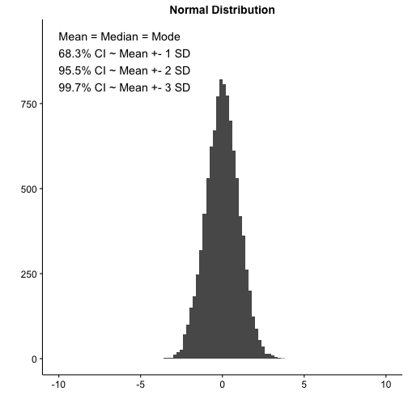
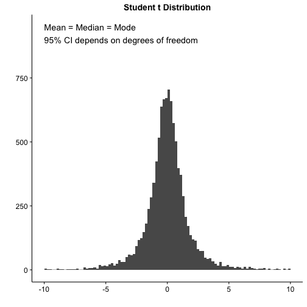
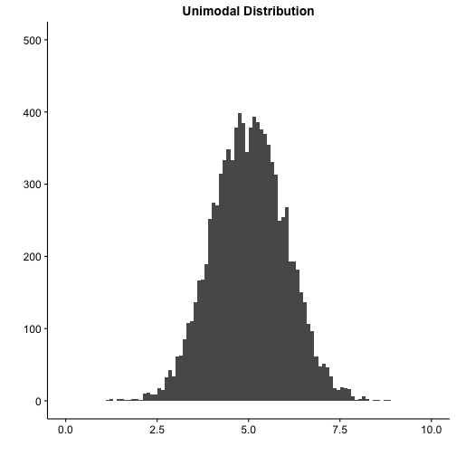
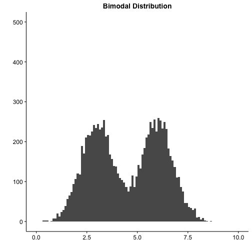
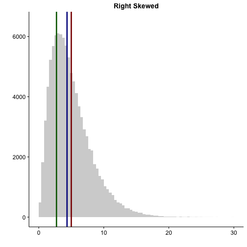
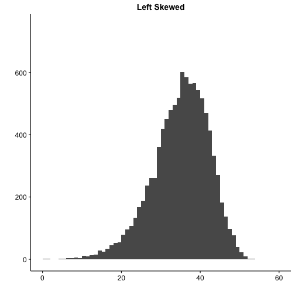
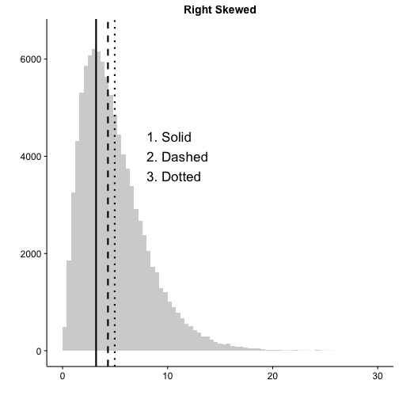
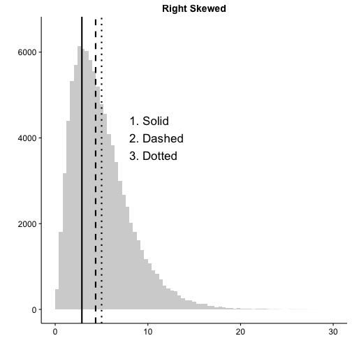
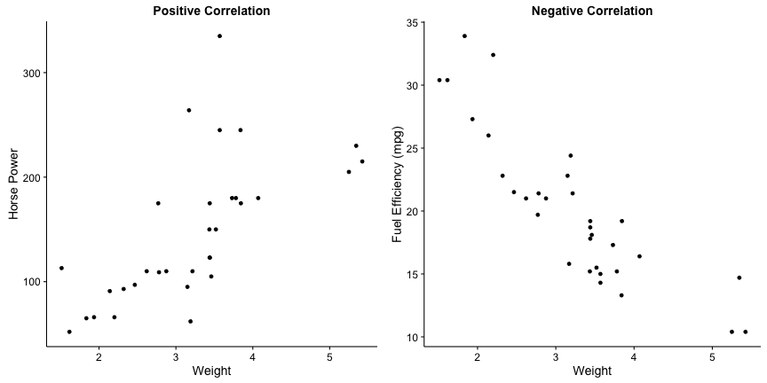
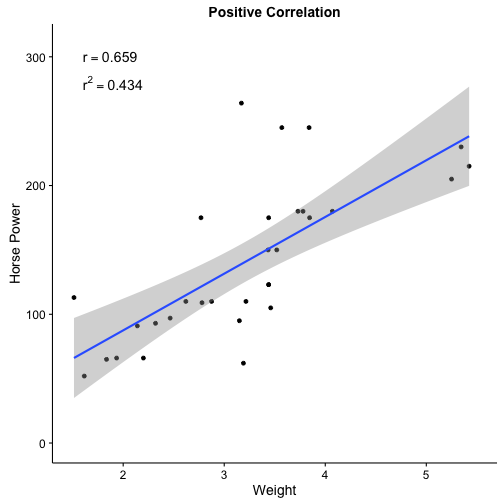

Validity and Reliability of Clinical Tests - 6 minutes
Measures of Risk - 10
Epidemiological Biases - 5 minutes
Types of Studies - 10 minutes
Biostatistics
Accuracy is closeness and Precision is repeatability
Use these terms to describe levels of belief
Generalizability
How applicable is result to general population
P-value
Probability of finding a value this extreme by random chance
Confidence Interval
Interval over which real population number is found with a specified probability
Ways to describe distributions of data
Statistical distributions have invariant properties


Question #1
Investigators are studying prostate specific antigen (PSA) as a predictor of prostate cancer. To make the statistics easier, they are going to assume that PSA is a normally distributed population variable. Which of the following is correct under their assumption?
Mode is greater than median
Median is greater than mode
95% CI depends on degrees of freedom
Median is equal to mean
Mean is equal to standard deviation
The normal distribution is unimodal and symmetric.
The important invariant properties (for you) of normal distributions are the following:
Mean = Median = Mode
Unimodal
Symmetric
Area under curve is 1
Constant relationship between standard deviation and percentiles
Real distributions can have one or multiple peaks


Skew describes the direction of the tail


Question #2

Which of the following corresponds to the measures of central tendency on the graph from left to right?
mean, median, mode
mode, mean, median
median, mode, mean
mode, median, mean
mean, mode, median
Mode is most common, median is middle, mean is average value.
Always remember that the y-axis on these plots are counts or frequency. Therefore, which line is closest to the peak on the y-axis is the mode. The median is always in the middle. The mean is the most susceptible to outliers so in a skewed distribution it will always be farthest out on the tail.
Understanding hypothesis testing
The null hypothesis (\(H_0\)) is always the default
Assuming there are two or more groups being compared...
\(H_0\): There is no difference in the means of the groups.
For Step 1, probably safe to assume null is always rejected with \(p < 0.05\).
\(H_A\): The difference between the means of the groups is real.
T-test compares measurements from two groups

\(H_0\): There is no difference between the control and disease groups
Will this be significant?
T-test compares measurements from two groups
\(H_0\): There is no difference between the control and disease groups
Run the t-test
norm1 <- rnorm(5000, mean = 4.75, sd = 1.2)
norm2 <- rnorm(5000, mean = 5.25, sd = 1.2)
(t.test(norm1, norm2))$p.value
## [1] 6.652389e-85
Have we rejected the null hypothesis?
Yes, we have accepted \(H_A\). There is a difference between control and disease.
Chi-squared test uses categorical (count) data
Two common tests
Test of independence
Goodness-of-fit
Test of independence
\(H_0\): There is no association between the variables under study
\(H_A\): There is an association between the variables under study
Goodness-of-fit
\(H_0\): The number of cases occuring are equal to that expected by chance
\(H_A\): The number of cases occuring are unequal to that expected by chance
Always expect a contingency table for chi-squared
Healthy
Disease
Total
Exposed
40
60
100
Not Exposed
500
400
900
Total
540
460
1000
Table 1: A 2x2 contingency table
Never Sick
Sometimes Sick
Mostly Sick
Total
High Exposure
10
20
180
210
Medium Exposure
20
100
20
140
Low Exposure
100
40
10
150
Total
130
160
210
500
Table 2: A 3x3 contingency table
The contingency table can be of any size
Never Sick
Infrequently Sick
Sometimes Sick
Mostly Sick
Always Sick
Total
Ridiculously High Exposure
Very High Exposure
High Exposure
Medium Exposure
Low Exposure
Very Low Exposure
Ridiculously Low Exposure
Total
Table 3: A 7x5 contingency table
Pearson correlation compares two variables
The correlation can be positive or negative

For correlation, r is the critical statistic
Must be quantitative data
Not count data
\(r =\) correlation between variables
\(r^2 = \) amount of variance in y that is explained by x
p-value is still used for significance
For Step 1, most likely significant at \(p < 0.05\)

Hypothesis testing has four possible outcomes
Correct - Reject a false \(H_0\)
Probability of success is called "power"
Correct - Fail to reject a true \(H_0\)
Probability determined by \(\alpha\) as \(1-\alpha\)
Type 1 - Incorrect rejection of a true \(H_0\)
False Positive
Type 2 - Failure to reject a false \(H_0\)
False Negative
Epidemiology
Question #3
Investigators are studying the association between mesothelioma and asbestos exposure. Due to the relative rarity of the disease, they design a very large case-control study. In the end, they find an \(OR = 20 (19.54;20.52, p < 0.001)\). After assuming that the OR is a good approximation of risk, the authors conclude that the risk of mesothelioma is 20 times higher in those exposed to asbestos compared to control. Why is their assumption reasonable?
The incidence of mesothelioma in the population is low
The sample size of this study is very large
The result is highly significant
The OR is always a good approximation of outcome risk